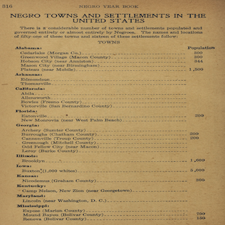
Negro Year Book, 1916-1917. Tuskegee Institute.
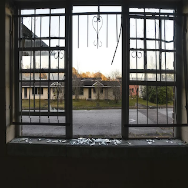
Africatown, AL. Julie Bennett, AP Images.
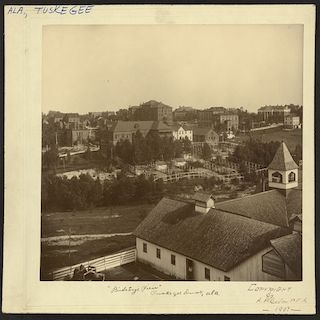
Tuskegee, AL (1907). Photo by Arthur P. Bedou.
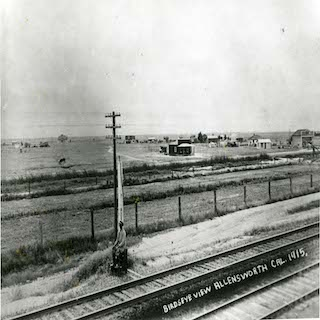
Allensworth, CA (1915). California State Parks.
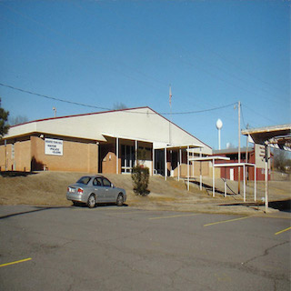
Menifee, AR (2011). Photo by Mike Polston.
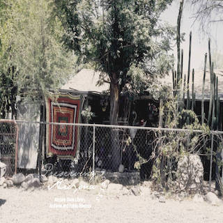
Raldolph, AZ (2004). Arizona State Library.
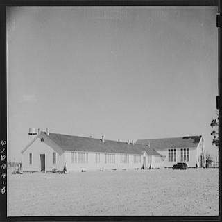
Lakeview, AR. Arkansas Historic Preservation Program.
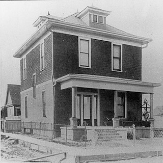
Edmonson, AR (c. 1910). Central Arkansas Library, Butler Center for Arkansas Studies.
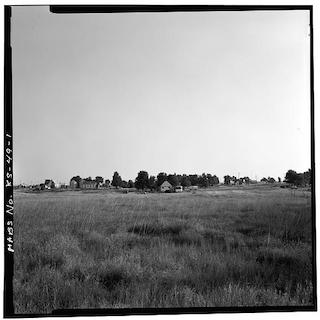
Nicodemus Historic District, Graham County, KS. Library of Congress.
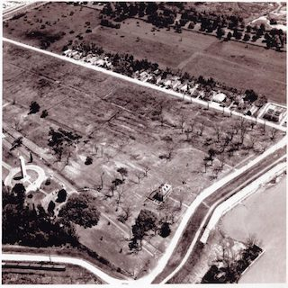
Fazendeville, LA (1960). Louisiana National Guard.
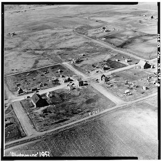
Aerial View of Nicodemus (1953). Library of Congress.
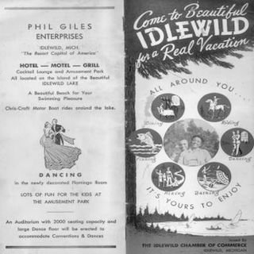
"Come to Idlewild" Brochure (1955). Ronald Stephens Collection.
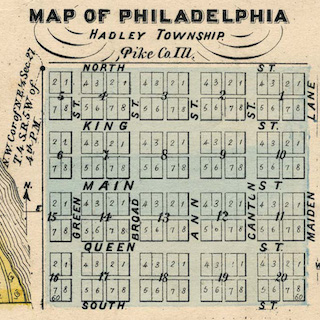
New Philadelphia, IL. Free Frank New Philadelphia Historical Society.
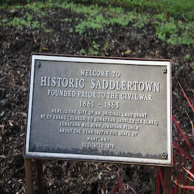
Saddlertown, NJ Historical Marker
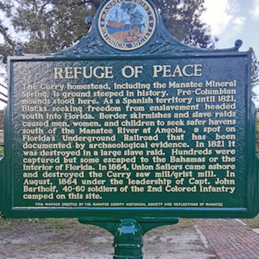
Angola, FL Historical Marker. Reflections of Manatee.